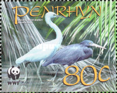
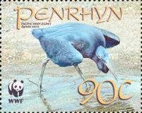
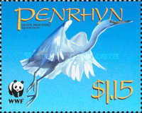
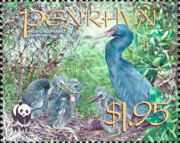
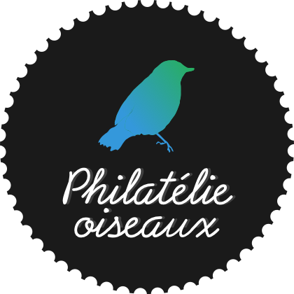

16th January 2015
The Pacific reef heron (Egretta sacra), also known as the eastern reef heron or eastern reef egret, is a kind of heron. They are found in many areas of Asia including the oceanic region of India, Southeast Asia, Japan, Polynesia, and in Australia,Tasmania and New Zealand. They are now quite rare in New Zealand.
|  |  |  |  |
Reef herons are of two type, with a dark phase and a white phase. The white phase is common in the Pacific whereas the dark phase is usual in New Zealand. They are coastal birds and are rarely seen inland.
Pacific reef herons are medium-sized herons, reaching 57 to 66 cm in length. They have a wingspan of between 90 and 110 cm and reach an average weight of 400 grams.
Eastern reef egrets have very short, yellow legs, and the grey variety's throats and chins are marked by a narrow, white stripe. They have brown beaks, gold-yellow coloured eyes and the surrounding areas of their faces are normally of a greenish to yellow cast.
Their food sources are made up predominantly of varieties of ocean-based fish,crustaceans and molluscs.
The species lay clutches of eggs year round in colonies in the jungle, between palms and mangroves or in cavities of old buildings. Two to three paled greenish-blue eggs are laid in nests constructed from branches and blossoms. Males and females share brooding tasks. They normally have a 28-day brood period. After chicks are hatched, parents provide approximately 5 weeks of support.
Buller records: Captain Mair writes: “On Whale Island I saw some 30 of these birds and I found a number of their nests in a cave. Those that were fully fledged were a beautiful light blue colour, with bright yellow legs. It was very funny watching them flying into the high trees, perching among shags and looking very gawky; then presently, the shags, with loud gutteral noises, would sally forth, chasing them far and wide.” The crane’s cave as it is called, is open to the sea at the entrance, but it extends inwards some 30 feet and has an elevated or arched roof, and the nests of the herons are placed on the projecting ledges of rocksPenrhyn is the most far flung of the Cook Islands. And it lies just 9 degrees below the equator. At 11.2 kms (7 miles) wide and 24.1 kms (15 miles) long, it's also the largest atoll in the Group and one of the largest in the Pacific.
Early Polynesian settlers called it Tongareva - a name still used to this day - meaning "south of the empty space". And there's a lot empty space around it. The nearest neighbours are Rakahanga, and Manihiki 322 kilometres (200 miles) to the southwest. The modern name comes from the ship, Lady Penrhyn which passed by the island on 8 August, 1788. The first contact between the islanders and explorers didn't happen until 1816 though, when crew of the Russian vessel, 'Rurick' commanded by Otto Von Kotzebue traded with the locals.
This is the only island in the Cooks without any ariki or paramount chiefs. The entire hierarchy disappeared in the early 1860s when Peruvian labour traders arrived on the island and shipped hundreds of men, women and children to the mines of Peru with the blessing of the island's missionaries. Over 80% of the population was never seen again.
|  |
Philatelie OiseauxThis is a small project by team 27AE60. Main goal of this project to connect information about Birds topic stamps and corresponding birds information. Because we love Stamps and postal History. Keep Calm and Enjoy Philately |
peace